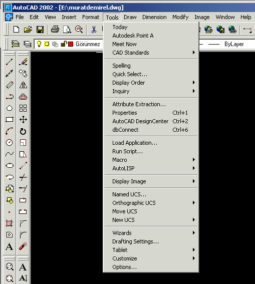

|
Giriþ:
LISP
programlama dili nesneye dayalý olmayan, medya öðelerini çok
fazla kullanamayacaðýmýz; Basic ve Pascal gibi makine dili
haricindeki programlama dillerinden biridir. AutoLISP modül
uygulamalarýnýn AutoCAD ortamýyla bütünleþtirilmesinin amacý;
AutoCAD'e yüksek seviyeli dillerde olduðu gibi makro düzeyde
program yazýlmasýna olanak saðlamaktýr.
LISP programlama dili çok güçlü ve öðrenmesi çok kolay bir
programlama dilidir. Asýl anlamda LISP, yapay zeka çalýþmalarýnda
kullanýlan bir program dilidir. List Processing 'in (Liste
iþleme) kýsaltýlmýþ ifadesidir. AutoLISP ise LISP'in AutoCAD
ile kullanýlabilecek þekilde uyarlanmýþ halidir. AutoLISP
sayesinde kullanýcýnýn AutoCAD'e yeni komutlar eklemesi kiþiselleþtirmesi
ve ondan artan bir verim elde etmesi mümkündür. Tabii ki yeni
komutlardan kastedilen, kullanýcýnýn AutoLISP fonksiyonlarýný
kullanarak hazýrladýðý program dosyalarýný AutoCAD ortamýndan
çaðýrarak kullanmasýdýr.
AutoLISP
dosyalarýnýn ASCII dosyalar oluþturabilen bir kelime iþlemcide
(text editor) hazýrlanmasý ve uzantýsýnýn *.LSP olmasý bir
zorunluluktur.
AutoLISP
dosyalarý aslýnda fonksiyonlardan meydana gelmektedir. Kullanýcý,
bir takým standart fonksiyonlarý kullanarak veya kendisi çeþitli
fonksiyonlar tanýmlayarak yapmak istediklerini gerçekleþtirir.
Gerek standart fonksiyonlar, gerekse kullanýcý tanýmlý fonksiyonlar;
deðiþkenlere deðerler atanmasý, bu deðerlerin AutoLISP tarafýndan
deðerlendirilerek sonuçlar elde edilmesi mantýðýna göre çalýþýr.
AutoLISP programlarda büyük küçük harf ayrýmý yapmaz.
AutoLISP
Dosyalarýnýn Yüklenmesi:
AutoCAD
ortamýna herhangi bir daha önceden hazýrladýðýmýz AutoLISP
programýný aktarmak için iki farklý yol takip edilebilir birincisi;
klavyeden Appload komutunu girilmesinin ardýndan çalýþtýrmak
istediðimiz dosyayý seçip Load butonunu týklayarak daha önceden
hazýrlanmýþ program AutoCAD ortamýna aktarýlabilir veya AutoCAD'de
menü çubuðunda menüde bulunan Tools sekmesine týklayarak açýlan
pulldown menüden Load Application sekmesine týklayarak dosya
ekleme ekranýna ulaþabiliriz buradan eklemek istediðimiz dosyayý
konum sekmesinin yardýmýyla bulup Load butonunu kullanabiliriz.
(Bu yöntem aþaðýda ekran görüntüsüyle açýklanmýþtýr)

Dialog
tablosundaki Save List kutucuðu seçilirse AutoCAD aktif directory'de
Appload.dfs adýnda bir dosya oluþturulur ve liste bu dosya
içinde saklanýr. Listenin korunmasýný istiyorsak. Save List
kutucuðunu seçin.
Eðer
herhangi bir AutoLISP dosyasýnýn AutoCAD açýlýþýnda dosyamýza
eklenmesini istiyorsak Load Application ekranýndan sonra karþýmýza
gelen pencerede bulunan Startup Suite kýsmýnda yer alan Contents.
butonuna basarak karþýmýza gelen önceden atadýðýmýz AutoLISP
dosyalarýný AutoCAD ile iliþkilendirebiliriz.
LISP
Dosyalarýnýn Yapýsý:
Bir
LISP dosyasý içinde tüm fonksiyonlar bir sol parantez "("
ile baþlar ve bir sað parantez ")" ile biter. Parantezler
kuralýna uyuldukça bir fonksiyon içinde baþka alt fonksiyonlar
da bulunabilir. AutoLISP dosyalarýnýn ilk satýrlarý daima
"defun" ifadesiyle baþlar. Bu AutoLISP'in en temel
fonksiyonudur. defun fonksiyonu kullanýlmadan AutoLISP programý
yazýlamaz.
Örnek:
(defun
fonk.adi ( )
(sub.fonk1 (sub.fonk2))
) ; parantez sayýsýna dikkat ediniz.
Yukarýdaki
örnekte görüldüðü gibi fonksiyon "defun"
ile baþlamýþtýr. Sub.fonk olarak tanýmlanan fonksiyonlar
ana fonksiyon içinde kullanýlan ve iþlemleri yapan alt fonksiyonlardýr.
Bu alt fonksiyonlar genellikle, standart LISP fonksiyonlarý
veya kullanýcýlarýn tanýmladýðý fonksiyonlardýr. Daha önce
de belirtildiði gibi LISP dosyalarýnda dikkat edilmesi gereken
en önemli hususlardan bir tanesi parantezlerdir. Özetle þöyle
söyleyebiliriz; AutoLISP dosyasýnda açýlmýþ olan parantez
kadar parantezin program akýþýna göre uygun yerlerde kapatýlmasý
zorunludur. Yazýlan AutoLISP dosyalarý AutoCAD ortamýna
çaðrýldýðýnda (bu iþlem daha sonra detaylý olarak anlatýlacaktýr)
daha önce de belirtildiði gibi AutoLISP tarafýndan deðerlendirmeye
alýnýr. Bu deðerlendirme dosya AutoCAD ortamýnda çalýþtýrýlmaya
baþlanmadan hemen önce yapýlýr. AutoLISP deðerlendiricisine
EVULATOR adý verilir. Deðerlendirme esnasýnda ekranda Command:
alanýnda ; n> ifadesi görülürse (n bir tamsayýdýr) n kadar
sað parantezin eksik olduðu anlaþýlýr.Yani açýlan sol parantezler
içinde n tanesi sað parantez kullanýlarak kapatýlmamýþtýr.
Bu hatayý düzeltebilmek için LISP dosyanýza dönerek n tane
sað parantezi uygun yerlere koymanýz gerekir.
Bazen
programýn baþýnda açýlmýþ olan bir sol parantez programýn
sonlarýna doðru kapatýlabilir (Yukarýdaki örnekte olduðu gibi).
Tabii ki bu parantezlerin yeri fonksiyonun iþlevi ile baðlantýlýdýr.Fonksiyonlar
içindeki ifadeler birden fazla satýra taþabilir; bu yazý bir
satýrdan fazla olduðu için ikinci satýra da devam edebilir.
Önemli olan açýlmýþ sol parantezlerin sað parantezler ile
kapatýlmasýdýr.
Defun
fonksiyonu ile program yazýmýna baþlandýktan hemen sonra bu
fonksiyon bir sað parantez ile kapatýlmaz. (defun ile baþlayan
ve ardýndan fonksiyon adýnýn yazýldýðý bu fonksiyon içinde,
yapýlacak iþlemleri tanýmlayan alt fonksiyonlar yer alýr.
Örnek:
(defun
toplama ( )
(setq A (getint "BIRINCI SAYIYI GIRINIZ :"))
(setq B (getint "IKINCI SAYIYI GIRINIZ :"))
(setq C (+ A B))
princ "\nSONUC : ")
(princ C)
(princ)
Yukarýdaki
örnekte ilk satýr fonksiyonun baþlangýç satýrýdýr. Ýkinci
satýr ile kullanýcýdan bir sayý girmesi istenir. Girilecek
sayý tamsayýdýr. Bu sayý A deðiþkenine atanýr. Üçüncü satýrda
ikinci tamsayý istenir. Bu sayýda B deðiþkenine atanýr. Dördüncü
satýrda ise girilmiþ olan iki tamsayý toplama iþlemine sokulur
ve sonuç C deðiþkenine atanýr. Beþinci satýrda belirtilmiþ
olan fonksiyon sayesinde üçüncü satýrda elde edilmiþ olan
sonuç ekranýn komut alanýna yazdýrýlýr. Son satýrdaki parantez
ile de ilk satýrda açýlmýþ olan parantez kapatýlýr. Bu örnekte
AutoLISP'in standart fonksiyonlarýndan olan setq ve
princ fonksiyonlarýnýn nasýl kullanýlabileceðini örneklenebilir.
Örnek Bir AutoLISP Programý ve Komut Açýklamalarý:
Aþaðýda
detaylý olarak verilen bu örnek programý bilgisayarýnýza da
indirebilirsiniz: DELL.LSP
XY DÜZLEMÝNDE BULUNAN BÝR KATI CÝSMÝN ÜZERÝNDE
ÝSTENÝLEN ÇAPTA BÝR SÝLÝNDÝR AÇAN PROGRAM :
(defun
c:dell()
(setq p1(getpoint "\nDelinecek nesne dýþýnda bir nokta
seçin:"))
(setq p2(getpoint "\nDelinecek nesne içinde bir nokta
seçin:"))
(setq nesne(ssget "c" p1 p2))
(setq yer(getpoint "\nMerkez noktasý :"))
(setq r(getreal "\nYariçapý girin :"))
(setq h(getreal "\nYüksekliði Girin :"))
(command "ucs" "origin" yer)
(command "cylinder" "0,0,0" r h)
(command "subtract" nesne "" "last"
"")
(setq nh(* -1 h))
(command "cylinder" "0,0,0" r nh)
(command "subtract" nesne "" "last"
"")
(command "ucs" "world" "")
)
Programýn
Açýklamasý:
(defun c:dell() : Programý aktif etmek için kullanýlacak
komutu belirtir .
(setq p1(getpoint "\nDelinecek nesne dýþýnda bir nokta
seçin:"))
(setq p2(getpoint "\nDelinecek nesne içinde bir nokta
seçin:"))
Yukarýdaki satýrlar þekil içinde ve dýþýnda birer nokta seçtirerek
bu nokta koordinatlarýný P1 ve P2 deðiþkenlerine aktarýr.
(setq nesne(ssget "c" p1 p2)) : P1 ve P2
noktalarý arasýnda nesneyi veya nesneleri seçerek bu nesneyi
"nesne" deðiþkenine atar. Bu iki nokta arasýnda
bulunan þekli seçmek için ise "c" parametresi kullanýlmýþtýr.
(setq yer(getpoint "\nMerkez noktasý :"))
: Çizilecek silindirin merkezini belirlemek için bir nokta
seçtirir ve yer deðiþkenine aktarýr.
(setq r(getreal "\nYariçapý girin :")) :
Çizilecek silindirin yarýçapýnýn girilmesi istenir ve bu deðer
"r" deðiþkenine atanýr.
(setq h(getreal "\nYüksekliði Girin :"))
: Çizilecek silindirin uzunluðunu ister ve bu deðeri h deðerine
atanýrýr.
(command "ucs" "origin" yer) :
UCS yer deðiþkeninde saklanan noktaya taþýnýr.
(command "cylinder" "0,0,0" r h)
: "0,0,0" noktasý merkez olacak þekilde "r"
yarýçapýnda ve "h" yüksekliðinde bir silindir çizer.
(command "subtract" nesne "" "last"
"") : Son çizilen nesneyi yani silindiri "nesne"
deðiþkenine atanmýþ olan nesneden çýkarýr.
(setq nh(* -1 h)) : "h" deðerinin çarpmaya
göre tersini alýr ve "nh" deðiþkenine atanýr.
(command "cylinder" "0,0,0" r nh)
: "0,0,0" noktasý merkez olacak þekilde "r"
yarýçapýnda ve "nh" yüksekliðinde bir silindir çizer.
Fakat bu yeni silindir diðer silindirin tersi yönünde uzanýr.
(command "subtract" nesne "" "last"
"") : Son çizilen nesneyi yani silindiri "nesne"
deðiþkenine atanmýþ olan nesneden çýkarýr.
(command "ucs" "world" "")
: UCS standart ayarýna getirilir.
Kaynaklar:
1.
BAÞAK Hüdayim - AutoLISP - Pusula Yayýncýlýk, Eylül 2002
2. ÞEKERCÝOÐLU Ahmet - Adým Adým AutoCAD - Bilim Teknik Yayýnevi
3. ÇIKIÞ Ender - AutoLISP- Beta Yayýnlarý
4. Visual LISP Developer's Guide - Autodesk Inc.
5. YALDIZ Süleyman - AutoCAD 2002 - Ýnci Ofset, Aralýk 2002
*
Not: 01-01-2004 tarihinde bir soru üzerine ilk defa gruba
gönderdiði bu çalýþmasýndan dolayý TurkCADCAM e-posta grubu
üyelerinden Murat Demirel'e teþekkür ederiz.
|